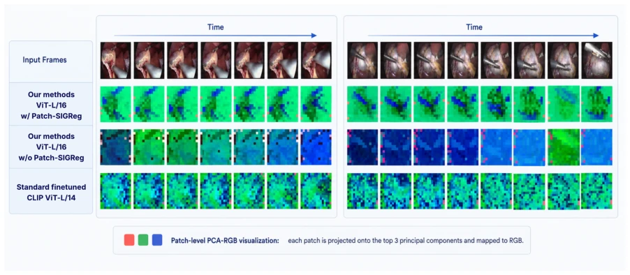
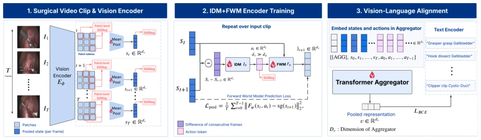
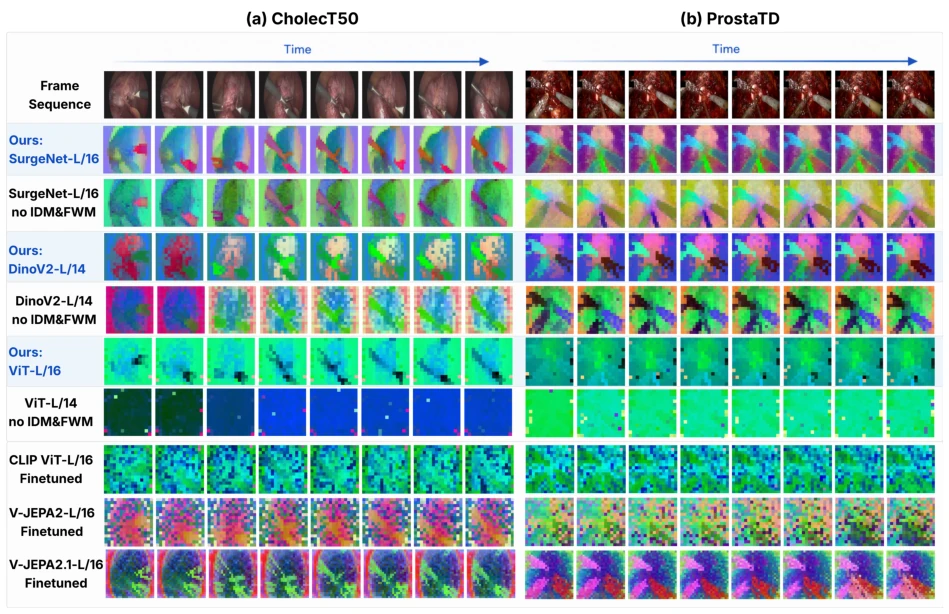
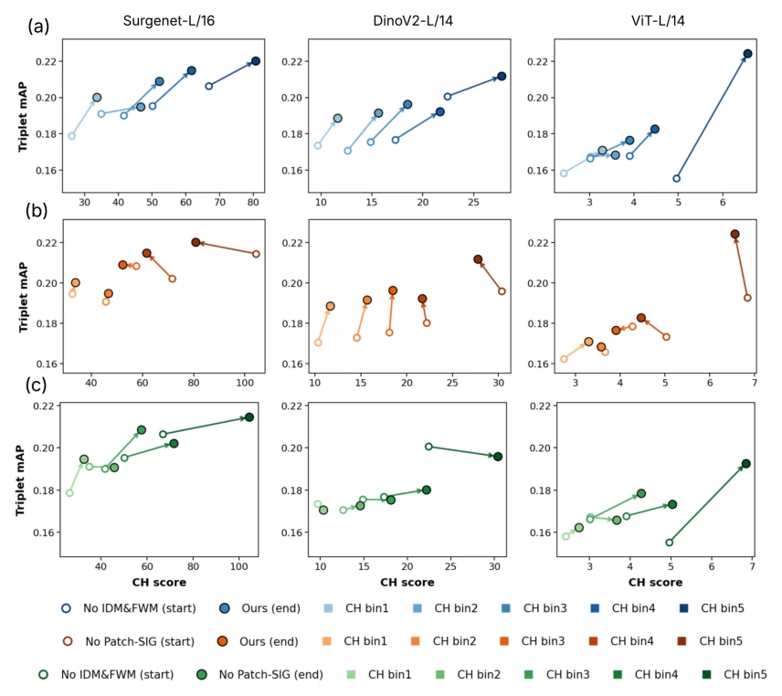
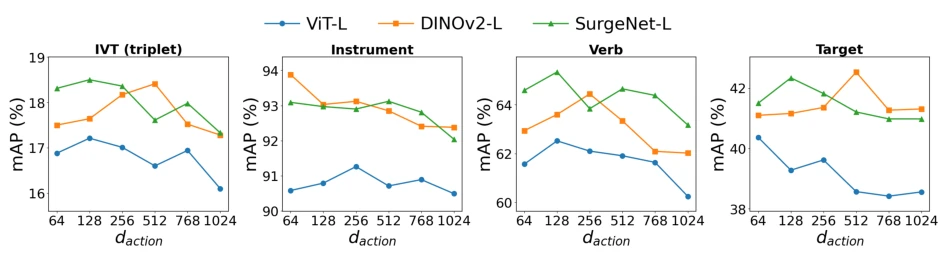
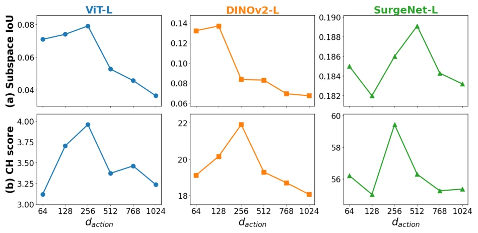

This paper adds a bit of "world model" seasoning to surgical action recognition. The authors found that simply freezing the visual encoder retains noise, while full fine-tuning loses spatial details. Thus, they developed LAViFiT, using an Inverse Dynamics Model (IDM) and a Forward World Model (FWM) to guide the visual encoder to focus on action-related regions. SIG regularization prevents feature collapse, which sounds very promising. But essentially it is still VLM-based fine-grained recognition, not breaking out of the "classification head" mold. Although results improved mAP on CholecT50 and ProstaTD, what about computational overhead and end-to-end training stability? After all, surgical videos are noisy; will this model relying on state differences be sensitive to registration errors? It counts as adding a dynamic filter to the "perception" module of surgical AI, but there is still a distance from true embodied decision-making.
Surgical robot automation requires precise recognition of instrument-tissue interaction. Existing methods are mostly based on closed-set classifiers [4, 5], with poor generalization. VLM-based methods are good, but fine-tuning strategies have limitations: Freezing encoders relies on pre-trained features, which may contain noise and have weak spatial localization [31, 18]; Full fine-tuning optimizes global semantics but may ignore fine-grained local structures, relying on background shortcuts [17, 28]. Existing methods often require extra annotations (e.g., bounding boxes) to enhance localization [8, 25], which are difficult to obtain in the surgical field. Therefore, a method is needed that requires no extra supervision and can learn action-related regions directly from temporal observations.

Figure 1: Visualization of vision encoder behavior under standard fine-tuning and our method, and the changes induced by the patch-level SIG regularizer.
方法Method
整体框架为端到端微调。输入视频片段，Vision Encoder 生成状态 token。核心创新在于引入 Latent-Action 引导：1) Delta-IDM：不直接输入两帧状态，而是输入状态差分，压缩成低维潜在动作，防止模型偷懒复制下一帧；2) FWM：利用当前状态和潜在动作预测下一帧状态，使用 stop-gradient 目标，迫使编码器保留对预测有用的动态信息；3) Aggregator：融合状态与动作序列，对齐文本嵌入；4) Patch-level SIG Regularizer：防止特征坍塌，无需额外标注。训练目标包括分类损失、预测损失和 SIG 正则化。通过限制潜在动作维度，强制编码器学习有意义的帧间变化，避免特征维度坍缩。
The overall framework is end-to-end fine-tuning. Input video clips, Vision Encoder generates state tokens. The core innovation lies in introducing Latent-Action guidance: 1) Delta-IDM: Instead of inputting two-frame states directly, input state differences, compressed into low-dimensional latent actions, preventing the model from lazily copying the next frame; 2) FWM: Use current state and latent action to predict next-frame state, using stop-gradient targets, forcing the encoder to retain dynamic information useful for prediction; 3) Aggregator: Fuse state and action sequences, align text embeddings; 4) Patch-level SIG Regularizer: Prevent feature collapse, no extra annotations needed. Training objectives include classification loss, prediction loss, and SIG regularization. By limiting latent action dimensions, forcing the encoder to learn meaningful frame-to-frame changes, avoiding feature dimension collapse.

Figure 2: Overview of LAViFiT. The vision encoder maps a surgical clip to state tokens, while the IDM compresses consecutive-state changes into latent actions and the FWM predicts the next state using a stop-gradient target. Frame- and patch-level SIGReg prevent collapse, and the state-action sequence is aggregated and the aggregation token aligned with instrument-verb-target text embeddings.
Tested on CholecT50 and ProstaTD datasets, comparing CLIP, DINOv2, V-JEPA, and surgery-specific models (e.g., SurgVLP). Metrics are triplet mAP and component mAP. LAViFiT achieved the best on SurgeNet-L, CholecT50 mAP improved by 1.49 points. Ablation shows removing IDM/FWM or SIG regularization both lead to performance drop, especially on ViT-L where gains are more pronounced. Analysis shows IDM compressed effective dimensions of state differences, enhanced spatial alignment of features in interaction regions (IoU improved), and SIG regularization further improved feature separability (CH score), proving it can suppress background noise.

Figure 3: PCA-RGB visualizations of encoders trained with and without our latent action framework on (a) CholecT50 [43] and (b) ProstaTD [10]. All variants of our method are trained with IDM, FWM, and patch-level SIGReg. V-JEPA2 and V-JEPA2.1 figures are visualized using tublet tokens.

Figure 4: Per-bin CH →mAP trajectories (da = 128, triplet mAP). Test frames are split into five CH quintile bins (z-scored, pooled per pair); each arrow joins the mean CH (x) and triplet mAPIVT (y) of the two models (start hollow, end filled), bins colored dark →bright for low →high CH. CH is over the Instrument-tissues interaction region object classes plus one background class, so it rewards objects separating from each other and from background. Columns: ViT-L, DINOv2, SurgeNet. (a) baseline (no IDM/FWM) →LAViFiT (blue); (b) LAViFiT without Patch- SIG →LAViFiT (orange). Up-right motion = higher separability and recognition; (c) baseline (no IDM/FWM). → LAViFiT (green) without Patch-SIG. Up-right motion = higher separability and recognition

Figure 5: Effect of the action-token dimension da on CholecT50. Each panel plots mAP versus da ∈{64,...,1024} for the three encoders (ViT-L, DINOv2, SurgeNet), for the triplet metric and the instrument/verb/target components.

Figure 6: Effect of the action dimension da on representation quality for ViT-L, DINOv2-L, and SurgeNet-L. (a) Subspace-grounding IoU and (b) CH score versus da. The grounding IoU is computed from the top-r eigenvectors of the transitioncovariancewithr=128fixedforallmodels. Eachpanelusesitsowny-scaletomakeper-encodertrendsvisible.